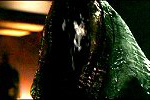
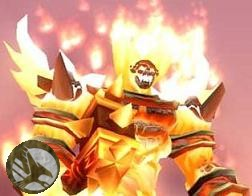
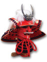
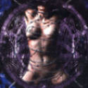
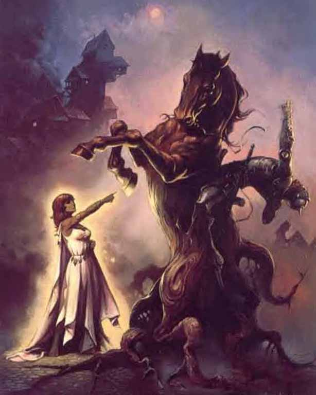
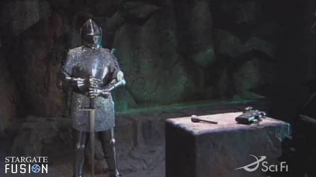
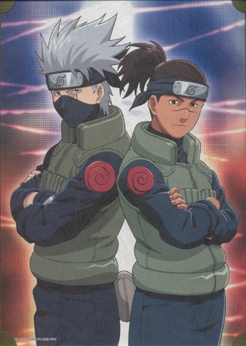

Forums galactiques > Assemblée Galactique : diplomatie officielle > Passage obligé : Présentations
| Sogris Respect diplomatique : 19  16/05 ETU 13:10 | Score : 3 Détails Un ronflement se fit entendre dans l' Assemblée ...
Suivi d'un coup puissant ! On vit alors la silhouette d'un petit homme apparaitre , visiblement excédé par ce matériel de mauvaise qualité ... "Décidément, la contrebande n'est plus ce qu'elle était !" Hum, hum !!! Bonjour à vous, fiers commandants !!! Je m'appelle Sogris, fier représentant du peuple Clesorien ! Je suis un humble marchand , qui ne vit que pour vous servir ! | ||
| Lewllyn Respect diplomatique : 192  16/05 ETU 14:15 | Score : 2 Détails Une bulle holographique arriva à l'Assemblée. L'image était de moyenne qualité, et grésillait par moments. On pouvait appercevoir un homme, de grande taille, avec une grande barbe rousse et un casque à corne sur la tête. Celui-ci prit la parole:
"Mes frères et soeurs, je vous envois ce message car mes services de communications viennent d'être rétablis à l'instant. Je me présente, Lewllyn, fils de Durmwall le grand, ancien dirigeant d'un empire disparu.Notre système a été balayé pendant plusieurs jours par un orage magnétique, puis par des bombardements hyperatomiques.La situation commençait à dégénérer sur ma planète natale, mes citoyens devenaient fous, et ont fait plusieurs coups d'Etat. J'ai moi-même du en organiser un pour reprendre le gouvernement de mon peuple. Je souhaite trouver des personnes dignes de confiance, avec qui je pourrais entretenir de relations diplomatiques, puis commerciales. " Et la bulle s'étint plongeant l'assemblée dans le noir. | ||
| kagatatsu Respect diplomatique : 4 16/05 ETU 14:53 | Score : 4 Détails Un homme de l’assemblée se leva et vint se placer sur devant le pupitre de parole. Il était de taille moyenne et habiller de manière distinguer :
Salutation Commandante et Commandant de toute galaxie. Je me présente : Kagatatsu, fils des ombres. Je représente le peuple pacifique de Chetyr. Nous sommes une communauté de paisible commerçant. J’ai attentivement écouté ceux qui sont passé avant moi. Il est clair que tous auront besoin de constituer une flotte digne de ce nom. Mon peuple se propose pour vous fournir en matière première ainsi qu’en divers appareil. En temps que professionnel, nous ne portons aucun intérêt au passé et but de nos clients. Tous sont les bienvenus, la seul condition étant de payer comptant les ressources commander. Suite aux récents intempéries, nos installations ont subit de lourd dommage. Nos centres de transport extra systémique sont les plus touchés. Nous somme donc contraint de limite nos échanges au commandant pressent dans notre système. Nous essayons de rouvrir nos routes commerciales dans les plus bref délais. Merci de votre attention. | ||
| Tigran Jamiro Respect diplomatique : 3  16/05 ETU 16:43 | Score : 4 Détails Excusez-moi de vous interrompre, mais comme tous ici, j'ai beaucoup de travail sur les bras.
Je suis Tigran Jamiro, délégué de la Latinium Corporation d'Echo Base, de la planète Odd. Notre ploutocratie étant une réussite, je suis venu apporter aux planètes diplomatiquement décadantes la voie du progrès et de la réussite. L'extraction de richesse est le seul moyen de faire rentrer de l'argent dans le système. Et donc le seul moyen de devenir plus riche, et de se développer. Je viens donc imposer la paix militaire et la cessation des pillages afin de privilégier l'extraction minière et le commerce, les seules voies civilisées pour avoir le pouvoir. Rejoignez la Latinium Corporation, soyez ploutocrates. Sur ce, je ne reste pas, j'ai un chargement à effectuer. Bonne journée et bon profits ! | ||
| koula Respect diplomatique : 7  16/05 ETU 17:40 | Score : 2 Détails ***Koula ,de ses 80 cm, se leva ,et dit:***
En tant qu'empereur de la planete spitzer,je me presente et je dit a tous que je suis ici . Voici mon histoire:Koula etait un paysan ouakakatchi au service des monstres bleus.Chaque année,plusieur menbres de sa tribut mouraient... ...jusque au jour ou Koula découvrit que les armes faisait du feu et que les monstres bleu n'etais pas contents lorsque on dirigeais l'arme sur eux... Aujourd'hui,Koula et sa tribut ouakakatchi reignent en maitres sur la planete au belles fleures... Slogan : Gigiyakabapa,wizibidibidi aounzier jikloulifiegara,planete au belles fleures. Jesouhaite atous les commandants un bon jeu. Gigiboulzu,Koula | ||
| Origine Respect diplomatique : 1  16/05 ETU 17:50 | Score : 1 Détails un etrange commandant dont on ne voyait pas le visage s'avanca:
"je suis Origine,je controlé un grand empire avant qu'il ne soit detruit par une tempete magnétique.j'ai reussit a reprendre le pouvoir sur une de mes ancienne planéte et je tente de reconstruire mon empire." | ||
| Ragnaros Respect diplomatique : 5  16/05 ETU 18:29 | Score : 5 Détails Un étrange homme se leva de son siège. Il était très grand et ses vêtements étaient poussiéreux. Sa peau rougeoyait, tel un brasier sur le point de s'enflammer.
Mortels! je m'appelle Ragnaros. J'étais enfouis dans les profondeurs de ma planète. Un puissant dictateur avait fais appelle à un sorcier pour m'emprisonner car je mettais opposé à lui. Il m'a emprisonner dans un noyau de feu mais grace à une puissance extraordinaire j'ai pu sortir. Dictateurs! Craignez moi car je ne laisserais pas cette galaxie s'effondrées à nouveau! Je pense qu'il faut créer un galaxie ou nous pourrons nous épanouir. Telle est ma pensée. Sur ce il partit se rasseoir. | ||
| Ichimaru Gin Respect diplomatique : 38  16/05 ETU 19:06 | Score : 10 Détails Haaaaa !!! J'ai bien dormi moi !! Tiens ?? C'est bizarre ici ! Il y a plein de têtes inconnues...
Il faut se présenter ? Vraiment ?? Je pensais que tous me connaissaient... Enfin bon ! La renommée n'est plus ce qu'elle était... Je suis Ichimaru Gin, Taicho de la 3° Division de Shinigamis. Je suis un homme puissant, rusé, intelligent, drôle, et surtout très humble. | ||
| Chrys Respect diplomatique : 6  16/05 ETU 19:19 | Score : 2 Détails Un homme de grande stature fit son entrée dans l'assemblée.
Il était revêtu d'une combinaison de combat complète et son visage était recouvert d'un masque à gaz. On pouvait discerner un blason inconnu sur son uniforme, au niveau de la poitrine. D'un pas décidé et très "militaire", il se rendit au coeur du bâtiment pour se présenter aux autres commandants. "Messieurs, je souhaite le bonjour à tous, je me présente : Duc Chrys, commandant en chef des Forces de Sécurité et des Troupes d'Intervention d'IBS CORPORATION, firme multigalactique de création de technologie de pointe dans le domaine de l'aérospatial, extraction de matières premières et prêt de crédits, j'en passe... Je précède de peu l'arrivée de la Princesse Saurala qui détient l'essentiel des parts de l'entreprise et vous racontera plus en détails l'histoire de la CORP." Sur ce il se rendit à son siège pour observer les autres commandants et se tut. | ||
| nobunaga Respect diplomatique : 17  17/05 ETU 00:31 | Score : 2 Détails Devant les murs d'enceinte du palais du futur gouvernement,on vit au loin un nuage de poussière accompagné de bruits de galops effrénés.
Dans cet amas de particules on vit apparaitre de fiers Bushis habillés de leur Hyoroii de cuir et de leur Kabuto. Les chevaux s'arrétèrent net devant le palais et rapidemment un guerrier sorti du rang ,déroula un washi qu'il lut d'un ton sec. "Par la présente déclaration et en les pouvoirs qu ils m'ont été conférés, je vous informe que notre Daymio ,Seigneur Nobunaga,digne héritier de la lignée des ODA et maître en son domaine de la province de Shiga, participera à la vie de cette galaxie." Le cavalier repris son rang parmi les bushis et la troupe repartit aussi vite qu'elle était arrivée. | ||
| Puritania Respect diplomatique : 3  17/05 ETU 00:51 | Score : 3 Détails Dans tout endroit il y'a des ténèbres, et dans toutes ténèbres il y'a un enfer.
Un capitaine inconnu dans son vaisseau flambant neuf avait traverser pratiquement toute la galaxie dans sa jeunesse. Explorateur intrépide il finit par se faire dévorer par sa folie et sombra dans le vortex des enfers. Apres avoir subit les pires souffrances, il s'extirpa des abimes. De nos jours ce capitaine, se fait appeler le Commandant Puritania, nom de sa ville natale, nom qui est à l'antipode du personnage sombre et morbide qu'il est a présent. | ||
| Enwho Respect diplomatique : 8  17/05 ETU 14:02 | Score : 4 Détails Je me présente.
J'ai un nom provenant d'un laguage préhistorique qui est: "Les Runes Norvégiennes". Ce pays était sur une planète banale nommée la Terre. Mes ancêtres ont pénétré sur cette planète avec un plan extraordinaire. Ils ont distrait les "humains" en balancent de vieux vaisseaux en panne afin de faire diversion. Cette race hyperinférieur ont couru faire des études sur ces vaisseaux basiques pendant que mes aieux pénétraient dans l'atmosphère. Ils atterirent sur un espace rempli de mixture qui s'appellait de "l'herbe". Ils étaient arrivés en Norvège et rencontrèrent un peuple. Ils firent connaissance avec ces êtres inférieurs et s'unirent avec eux. Ils apprirent leurs cultures et leur sorcellerie. Mes ancêtres apprirent plus tard que cette sorcellerie était secrète. Que le peuple était anonyme. Très vite, mes illustres aïeux apprirent cette sorcellerie. Les jours passèrent. Il faut savoir que ce peuple secret était un fanatique de guerre et de sang. Il avait besoin de sang pour leur sorcellerie. Un beau jour, mon grand-père se maria avec une femme de ce peuple. Les festivités eurent lieu. On sacrifia des bêtes. Les sorciers s'adonnaient à leur culte avec le sang des bêtes. Puis vint le jour où mon père et ma mère naquirent. La tradition du peuple tait qu'il fallait décapiter la mère une fois les enfants nés, afin que seul le père puisse faire une éducation virile à ses enfants. Ils appliquèrent la tradition avec ma grand-mère. Mon père et ma mère était jumeaux. Mais l'alliance des aliens et des humains étaient telles que le fait d'être frère et soeur n'empêchait pas d'avoir des enfants. Ils firent un enfant qui n'est autre que moi. On appliqua la tradition sur ma mère une nouvelle fois. Malheureusement, mon père mourut d'un "cancer du pancréas", maladie caractéristque des humains. Je fus donc élevé par mon peuple. On m'enseigna cet art noble qu'est la sorcellerie. Je devins très fort avec l'appprentissage. Lorsque j'eus 20 ans, je devins un maitre de la sorcellerie. Un jour, lors d'un sacrifice, le grand maître sorcier nous apprit que notre mort était proche étant donné une apocalypse qui nous détruirait. On me charga alors d'une quête. Je devais répandre la sorcellerie en retournant là d'où mes ancêtres étaient parti. J'accepta cette quête avec dignité en tant que survivant de cette explosion qui allait les balayer. On me conduit vers le vaisseau de mes ancêtres. Je pris quelques minutes avant de savoir m'en servir, étant doné que j'avais cela dans le sang. Je dis adieu à mon peuple. J'alluma les réacteurs et parti pour ce monde inconnu dont j'étais originaire. Une forte secousse eut lieu lorsque je mis le contact. Puis je me sentis propulsé dans un infini. Après quelques minutes de vols, j'entendis une forte explosion. C'était fini. Je ne pleurai point, mes ancêtres m'avaient apprit que les pleurs n'étaient qu'inutile. Je devais accomplir ma quête. J'entrais dans une galaxie nommé: "La galaxie des exilés". Je devais accomplir ma quête. | ||
| Otsu Respect diplomatique : 12  17/05 ETU 14:22 | Score : 5 Détails *La jeune femme se réveille dans une petite maison de campagne. Elle a l’air un peu endormie.
Elle se lève, doucement, titube jusqu'à ces chaussons, enfile distraitement une robe de chambre pour aller dans son jardin. Elle se rappelle un peu d’un grand bruit qui l’a réveillé.* -C’est toi le con qu’a fait tout ce bruit ? *Un homme est debout. Derrière lui, on peut voir une carcasse de vaisseaux planté au niveau du potager.* -Et en plus ta pourrie mes légumes ? -Excusez moi de vous dérange de si bonne heure mademoiselle, mais il semble que mon vaisseau est eu une déficience quand je survolais votre légumière. *Elle s’écrasa la main sur la figure* -Comment voulez-vous qu’on mange Bio avec des glandus comme sa ? Sa me tue … *Finalement, après de longes heures de négociation, l’homme pue repartir allégé d’une grande quantité de Leems.* Bon, déjà des emmerdes et il est même pas 11h … *Elle reprit donc le cours normal de sa petite vue de commandante. A midi, elle se promenait dans des couloirs marqués ‘administration’. Elle rentra dans un petit bureau sur lequel était marqué ‘Big boss’. Sur le bureau était posé un dossier marqué ‘on a été recensé’. Ouvrant rapidement le dossier, elle lue qu’on avait enfin réussi a reprendre contact avec d’autres commandants. Elle courue dans le terminal holographique. -Messieurs, Mesdames, Mesdemoiselles, Bonjour ! Ce petit salut vous provient des systèmes lointains. Nous avons enfin redémarré les systèmes de communications détruits à cause de cette saloperie de tempête galactique. Je me nomme Otsu, je suis l’ambassadrice, dirigeante, chef politicienne, grande parleuse de la planète Elwyn. Maintenant, je vais aller prendre un petit déjeuner et me recoucher en éspérant que personne ne viendra détruire mon potager. Bonne nuit a vous ! | ||
| Artanisian Respect diplomatique : 2  17/05 ETU 14:31 | Score : 2 Détails *Un message holographique parvint à l'assemblée*
<< Bonjour, je suis le commandant Artanisian, je vais me présenter rapidement et sans parlé de ma trop longue histoire car ceci prendrait des heures. Je suis un simple marchand mais je sais me défendre. Je suis politiquement neutre mais je préfère la démocratie car elle apporte la paix, donc la prospérité et les affaires. Je ne suis pas guerrier mais si besoin est, je suis prêt à faire la guerre. *L'image se brouille puis disparait, en même temps que le son qui lui s'arrete dans un effet sonore douloureux causé par la qualité douteuse du matériel.* | ||
| iruka Respect diplomatique : 1  17/05 ETU 14:56 | Score : 1 Détails "Ou somme nous kakashi ?"
<<Je ne sais pas !!!>> "Comment somme nous arriver la ?" <<On a du se faire invoquer !!!>> "il y a des gens" <<attention ils approches>> "que nous voulez vous* *devenez notre hokage(commandant)* *protéger nous du danger venant de l'espace* | ||
| Jin Respect diplomatique : 17  17/05 ETU 15:43 | Score : 6 Détails Bonjour je me présente, je m'appelle Jin, je vais vous raconter mon histoire.
Lorsque je n'étais encore qu'un enfant, mes parents m'avaient laisser sortir dehors pour jouer avec ma soeur. Profitant de cette occasion rare, car notre pays était en guerre civile, nous jouions dans les bois avec autant d'insouciance que naît un bébé. Arriver au terme de notre sortie nous rentrions a là maison quand j'aperçus des flammes qui s'en échappaient, immédiatement je me précipita vers la maison où je vis les corps de mes parents. Après avoir relever et après l'autopsie de leur dépouille, le médecin légiste m'annonça qu'ils avaient été tué a coups de katana. Les années passèrent et je dû grandir seul, ma soeur ayant été tuée à l'age de huit ans par un meurtrier pédophile. Cette homme je l'ai tué de mes propres mains, et je vous l'avouerais sans aucun remords. Croyez moi c'était un spectacle pitoyable, l'homme se lamentait en chantant une chanson de gamin, juste pour que vous ayez un petit échantillon de sa folie je vais citer ses paroles: << Il tient le monde !! Dans ses doigts !Il tient le monde !! Dans ses doigts ! >> croyez moi sur parole ce n'était pas une grande perte. Mon adolescence fût une periode clé de ma vie c'est durant cette époque que j'appris la politique, la strategie et les arts martiaux surtout le maniement d'armes tel que le katana. Lorsque j'arrivais a l'age adulte, ma planète organisa pour la premiere fois des élctions mondiale afin d'élir un représentant et un chef suprême, c'est avec beaucoup d'espoir que je me suis lancer dans cette campagne et c'est par un miracle que j'en triomphai. Et pour ceux qui voudraient savoir ce que sont devenuent les assassins de mes parents, je les aient éxécuté d'une manière pire que ce que mes parents ont subis. Maintenant je m'adonne au bien etre de ma planète et à la faire prosperer. Merci de votre écoute, amicalement Jin | ||
| Santa Claus Respect diplomatique : 268  17/05 ETU 18:29 | Score : 3 Détails *L’homme, d'un age certain, s’avança lentement dans la salle en balançant son arrière train. Il semblait venir tout droit d’une autre époque, tout droit sorti d’un livre. Il incarnait l’image même du bon grand père qui passe son temps à raconter de belles histoires à ses petits enfants. Abordant un large sourire, il salua son auditoire d’un léger balancement de la tête. Puis d’une voix calme et reposé, il s’adressa aux commandants présents*
Que d’ambition dans cette salle, que d’ambition ! C’est réjouissant de voir toute cette relève motivée pour reconstruire notre galaxie après ce chaos magnétique ! *Puis se tournant un court instant vers la régie* Je dispose de combien de temps ?... Bon alors je serais bref pour laisser la place à d’autres. Tout d’abord je vais me présenter pour ceux qui ne me connaitraient pas. Moi c’est Santa Claus. Je vous rassure tout de suite je ne vous raconterais pas toute ma vie, non pas qu’elle soit ennuyeuse car elle est pleine de péripéties, mais parce qu'elle est longue. L’avenir est devant nous, et grâce aux leçons tirées du passée, j’espère que cet avenir sera beau et sain, à la hauteur des espérances de tous les commandants. Cependant mes ambitions seront à la hauteur de mes forces qu’ils me restent. Et du temps qu’il me reste également car je suis fort bien occupé : protecteur des enfants, saint patron des jeunes célibataires, saint patron des navigateurs (je ne compte même plus les équipages que j’ai jadis sauvé de divers apocalypses dans mon jeune temps). Ma contribution ainsi sera humble, apporter la bonne humeur dans cette galaxie, le respect, la sincérité, la joie, la sagesse, … autant de notions que nos jeunes prétentieux ont malheureusement tendance à négliger aujourd’hui. C’est sur que la galaxie à bien changée, vous arrivez à une époque difficile où il faudra tout reconstruire, finis les années glorieuses où le plus petits de commerçant pouvait s’enrichir, devenir puissant, et pourquoi pas maître de la galaxie … … Euh, il me reste combien de temps là ? … Ah déjà ! Bon, alors je vais en rester là. Je me dirige dès maintenant vers la taverne. J’ai hâte de casser la croute et boire une bonne Guz. Entre nous, la bonne bouffe y’a que ça de vrai. | ||
| hextor Respect diplomatique : 3  17/05 ETU 18:49 | Score : 2 Détails ''les larmes seront sang , la joie sera malheurs , ....''
je ne peut accepter d'avoir été radié , votre galaxie sera mienne ! et le sang coulera ! et les sous-races seront expulsées de cette galaxie ! la population n'est que parasite et sera automatiquement anéantient , sauf ceux qui jure de prier hextor l'invincible ! ***message términé *** | ||
| Barry Respect diplomatique : 53  17/05 ETU 19:32 | Score : 1 Détails Le Commandant Barry arrive, il dit: "Bonjour, je me présente, commandant Barry, fière représentant des STARS, j'étais avec mon équipe Bravo en 1998 et nous avons évacué le manoir par hélicoptère, nous sommes parti quand soudain en route nous sommes passé dans la galaxie, ne me demandez pas comment mais nous sommes arriver là.
Donc je vous dis, bonjour à tous." | ||
| Praséodyme Respect diplomatique : 18  18/05 ETU 15:47 | Score : 3 Détails *Un hologramme apparu.
Un homme recouvert de noir, dont le visage disparaissait dans les profondeurs insondable de sa capuche apparu.* Bonjour, je suis Praséodyme, Parleur du Tapél. La bonne convenance veux que je vienne ici pour me présenter. (pause) C’est fait. (pause) Je ne suis pas autorisé à en dire plus, que ce soit sur moi, ma fonction, ou le groupement dont je suis un élément. *Après cette très brève intervention, l’hologramme disparu.* |
Forums galactiques > Assemblée Galactique : diplomatie officielle > Passage obligé : Présentations